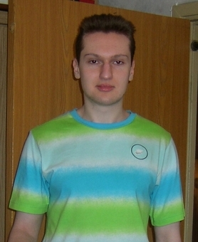
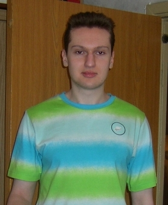
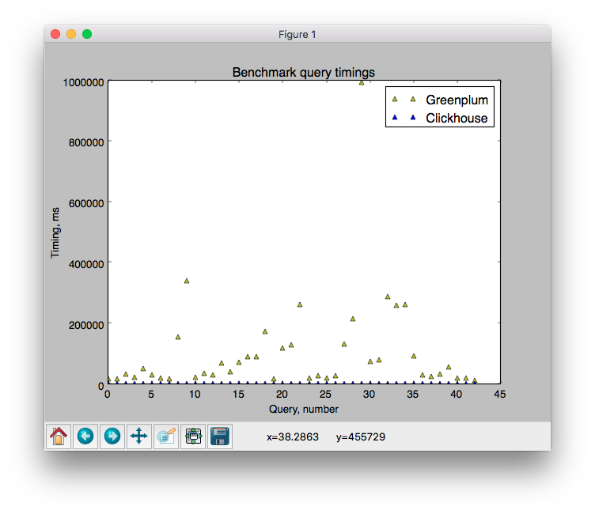

Команда
Теперь 5 разработчиков.


Теперь 5 разработчиков.

— HTTP и executable источники;
— оптимизация мержей, вертикальный мерж;
— трассировка распределённых запросов;
— clickhouse-local;
— операторы BETWEEN, ||;
— функции UUID - text;
— KILL QUERY;
— LIMIT BY;
— SELECT INTO OUTFILE;
— возможность получить прогресс выполнения в HTTP заголовках;
— возможность пропуска ошибок в текстовых форматах;
— правильные коды ответа в HTTP интерфейсе;
— «правильная» сборка и пакеты;
— Таблица system.build_options;
— производительность кэшируемых внешних словарей;
— инструментирование кэшируемых внешних словарей;
— HTTPS словари;
— информация об использовании памяти под индекс;
— информация о размере столбцов в несжатом виде;
— метрики по потреблению оперативки кэшами;
— метрики про мержи;
— оптимизация DISTINCT;
— производительность gzip в HTTP интерфейсе;
— оптимизация mark cache;
— правильная логика сравнений, least, greatest;
— groupUniqArray для всех типов данных;
— decodeURLComponent;
— защита от случайного DROP TABLE;
— use_client_time_zone; timezone в конфиге;
— fsync_metadata;
— интеграция с Grafana, Redash, Apache Zeppelin, Superset;
— правильные пакеты для CentOS, RHEL, GosLinux;
— драйвер native протокола для Go и C++;
— возможность передавать заголовки X-ClickHouse-*;
— бенчмарки NYC Taxi, Percona (Spark);
— бенчмарк Greenplum;
— англоязычный Telegram чат;
— встречи и доклады (Брюссель, Париж);
https://www.percona.com/blog/2017/02/13/clickhouse-new-opensource-columnar-database/


— распределённые DDL запросы;
— конфиги в ZooKeeper;
— полная поддержка NULL;
— работоспособность ODBC драйвера под Windows;
— переделать анализ запроса: правильная поддержка JOIN;
job-clickhouse@yandex-team.ru